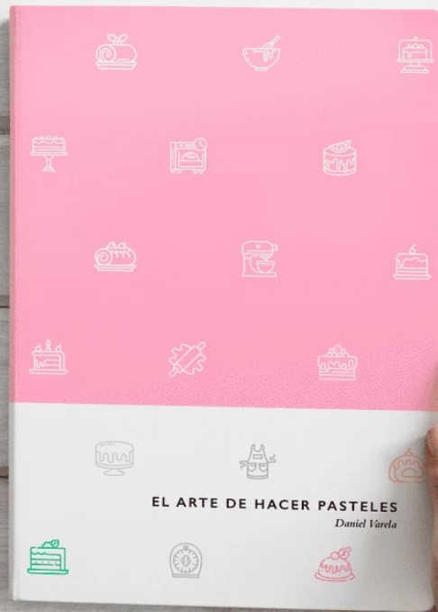
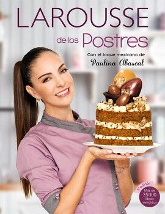
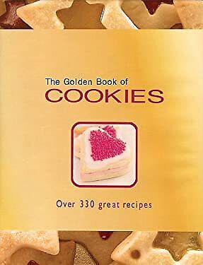
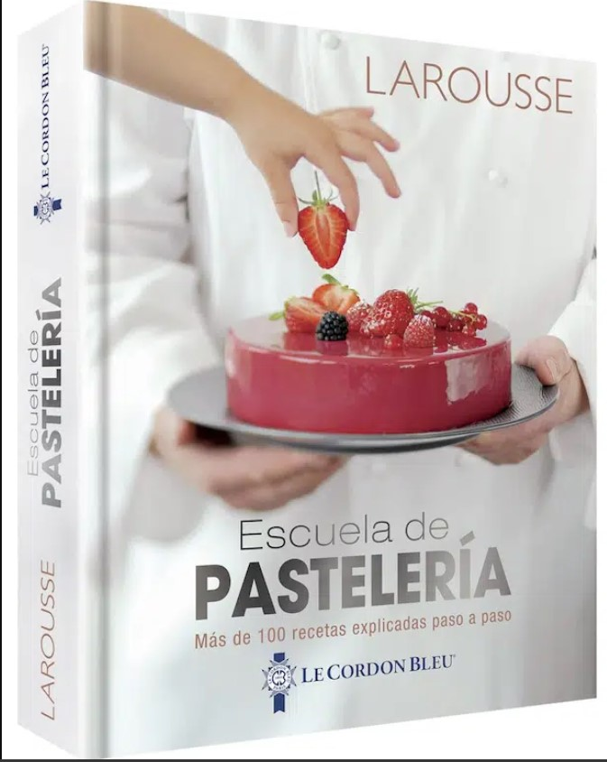
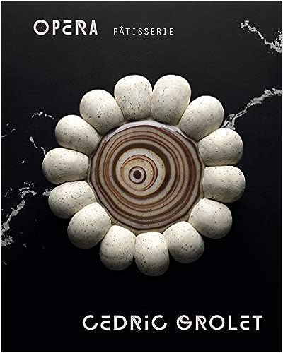

Libros recomendados
A continuación te presento una serie de libros recomendados si estás iniciando en la repostería y buscas algo básico o si ya tienes más experiencia y quieres perfeccionar técnicas.
| Libro | Acerca de | Nivel |
|---|---|---|
|  | El arte de hacer pasteles es un libro del chef Daniel Varela ideal para hacer pasteles en cualquier ocasión. | Principiante |
|  | El Larousse de los postres con el toque mexicano de Paulina Abascal es una de las obras en español más completas sobre repostería, incluye preparaciones, técnicas e ingredientes mexicanos e internacionales. | Principiante/Intermedio |
|  | Este libro de Carla Bardi bellamente ilustrado y fácil de seguir está lleno de más de 300 deliciosas recetas de galletas de todo tipo, desde las galletas más simples hasta brownies y pasteles de té | Principiante |
|  | Los chefs del Institut Le Cordon Bleu presentan en exclusiva los secretos de 85 recetas dulces, ilustradas y explicadas paso a paso, así como 15 preparaciones básicas imprescindibles de la pastelería francesa. | Intermedio/Avanzado |
|  | Con ÓPERA, Cédric Grolet pasa página y explora un nuevo mundo, el de la pastelería-panadería.Sigue tus sentidos a través de las páginas para descubrir las mejores recetas francesas de viennoiserie, panes, galletas, pasteles y sorbetes de frutas congeladas. Desde croissants hasta milhojas, desde tarte tatin hasta éclairs, el libro presenta 100 postres completamente ilustrados que todos amamos. | Intermedio/Avanzado |